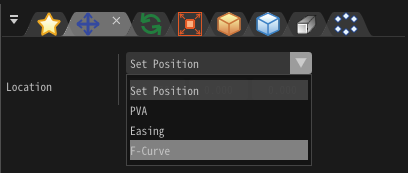

F-Curve¶
Overview¶
This is a feature that lets you automate frame-by-frame values over time by defining curves in a graph.

How to use¶
Display Graph¶
When you specify the F-curve for each item (position, rotation, etc.), their graphs will be displayed in the F-curve window.

When you select an item in the tree on the left side of the screen, the F-Curve is displayed. You can also select multiple items at the same time by holding down Shift and selecting items.
About Timeline¶
There are two timelines for the F-curve.
The first is a timeline represented by a number between 0 and 100, where 0 represents the time when the particle was created, and 100 represents the time the particle was discarded. It will still play back to 100 even if the life of the particle changes.
The second is a timeline that directly specifies the time of the frame. The time number directly represents the time.
These can be toggled by the timeline mode parameter.
Movement / Scaling of Graphs¶
| Move graph | On the graph, move the mouse while right clicking. |
| Horizontal scaling | On the graph, hold down Ctrl and scroll the mouse wheel. |
| Vertical scaling | On the graph, hold down Alt and scroll the mouse wheel. |
Add key frame¶
You can add a key by left double clicking the mouse on a line.
You can also add it from the menu by right-clicking the mouse on the line.
Delete key frame¶
You can remove a key by left double clicking the mouse on the key or delete button.
You can also delete it from the menu by right-clicking the mouse on the key.
Select key frame¶
You can select by left clicking the mouse.
Move key frame¶
After selecting the key, you can move it by moving the mouse while holding down the left mouse button. In the same way, you can also move the handles that control the curves.
You can also move multiple keys holding Alt.
Enlarge, shrink anchor¶
You can specify a position of an anchor automatically by selecting the key and pressing enlarge anchor or chrink anchor buttons. Pressing enlarge anchor expands the anchor and smoothes the line. Pressing shrink anchor merges positions between key and anchors and makes a F-Curve sharp.
Show entire graph¶
You can show entire graph by left double clicking a corresponding graph's label.

Parameter¶
Frame¶
Set for each key. Specify the frame of the key.
Value¶
Set for each key. Specify the value of the key.
Type¶
Set for each key. Specify the interpolation method between this key and its neighboring keys.
Start¶
Set for each graph. Specify how values before the left edge of the graph should be generated.
End¶
Set for each graph. Specify how values after the right edge of the graph should be generated.
Sampling¶
Set for each graph. When actually playing back, specify how many frames to use as the resolution for interpolation. The smaller the value, the more accurate the result will be to the actual shape of the graph.
Left X/Y¶
Set for each key. Specify the position of the left handle of the key's curve control.
Right X/Y¶
Set for each key. Specify the position of the right handle of the key's curve control.
Max/Min Offset¶
Set for each graph. When using values, offset the range, randomly shift the value up or down the graph.
Timeline Mode¶
You can toggle Timeline Mode.